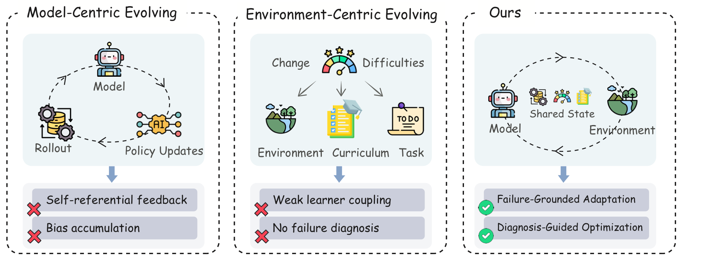
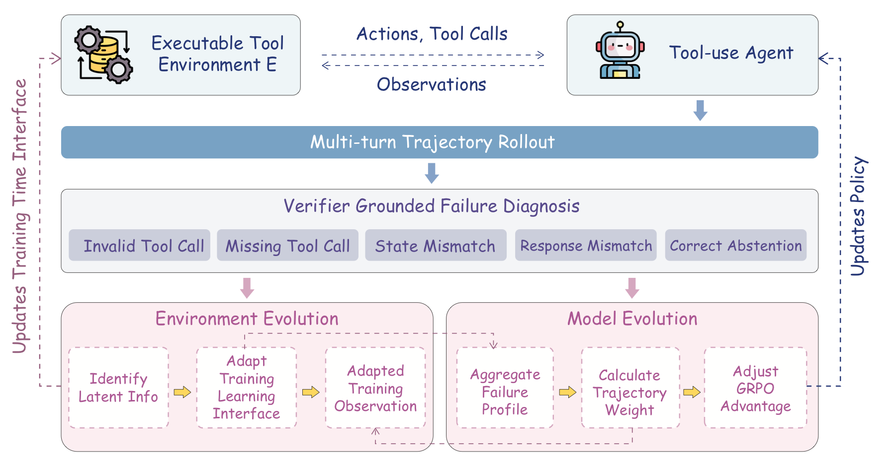
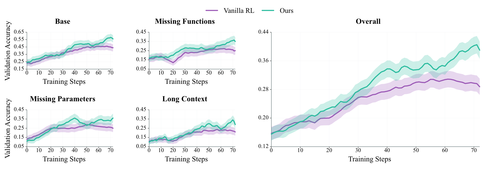

Failure Diagnosis
Executable traces are converted into turn-level labels such as invalid tool calls, argument mismatches, missing tool calls, recovery failures, and response mismatches.
Tool-Use Agents · Self-Evolution · Reinforcement Learning
SEAL closes the loop between policy learning and training-time environment adaptation, using verifier-grounded failure diagnosis to make low-resource tool-use agent learning more targeted and robust.

Paper Abstract
Large Language Model agents are increasingly improved through interaction rather than static supervision. Yet most self-evolution methods adapt either the policy or the learning environment in isolation. As the agent's capability frontier shifts during training, the environment that provides supervision often remains static or only weakly coupled to the agent's revealed failures. We call this mismatch Agent-Environment Misalignment.
SEAL is a closed-loop co-evolution framework for interactive tool-use agents. It collects on-policy trajectories under executable verification, diagnoses failed rollouts into turn-level labels, and uses these diagnoses as a shared signal for both learning-interface evolution and model-side policy optimization. With only 400 training samples, SEAL yields +8.25 to +26.25 average-point gains across three backbones and exhibits positive out-of-distribution transfer.
Core Ideas
Executable traces are converted into turn-level labels such as invalid tool calls, argument mismatches, missing tool calls, recovery failures, and response mismatches.
The training-time interface exposes clearer schema cues, tool affordances, constraints, and recovery-oriented feedback while keeping benchmark tools and verifier fixed.
Diagnosis profiles estimate how actionable each trajectory is, then reweight GRPO advantages without changing the verifier reward or success criterion.
The agent reveals capability gaps, the learning interface adapts around those gaps, and the model internalizes the resulting feedback through policy optimization.
Architecture

Reported Experiments
Average score and category-level success rates.
| Model | Average | Base | Missing Functions | Missing Parameters | Long Context |
|---|---|---|---|---|---|
| Qwen2.5-3B-Instruct | 5.75 | 11.00 | 6.00 | 3.00 | 3.00 |
| + Vanilla RL | 9.25 | 16.00 | 9.00 | 6.00 | 6.00 |
| + SEAL | 14.00 | 19.00 | 15.00 | 12.00 | 10.00 |
| Qwen2.5-7B-Instruct | 14.00 | 22.00 | 14.00 | 10.00 | 10.00 |
| + Vanilla RL | 30.75 | 46.00 | 27.00 | 27.00 | 23.00 |
| + SEAL | 40.25 | 58.00 | 36.00 | 34.00 | 33.00 |
| ToolACE-2-Llama-3.1-8B | 32.00 | 45.00 | 26.00 | 35.00 | 22.00 |
| + Vanilla RL | 38.50 | 52.00 | 30.00 | 40.00 | 32.00 |
| + SEAL | 46.75 | 58.00 | 46.00 | 44.00 | 39.00 |

Citation
@article{hu2026seal,
title={SEAL: Synergistic Co-Evolution of Agents and Learning Environments},
author={Hu, Yihao and Wen, Zhihao and Liu, Xiujin and Wang, Pan and Zhang, Xin and Wu, Wei},
journal={Preprint},
year={2026},
url={https://yihaohu0118.github.io/SEAL/}
}